A / RGB 314×206 / generated, unselected
Control Tower
scenes:biology_park/control_towerOrderly initial tower office, three sign-off stamps per desk, analog approval equipment and the jungle outside.

Seven generated candidates · Art Director and owner selection pending
The owner accepted the corrected rendering style after the tower calibration. This does not select or approve these seven images for production. All earlier selected artwork remains unchanged.
Start with the native contact sheet to judge clarity, then inspect the exact4× exports. All scenes are opaque RGB314×206. The exports reuse the selected Batch1 64-paint palette.
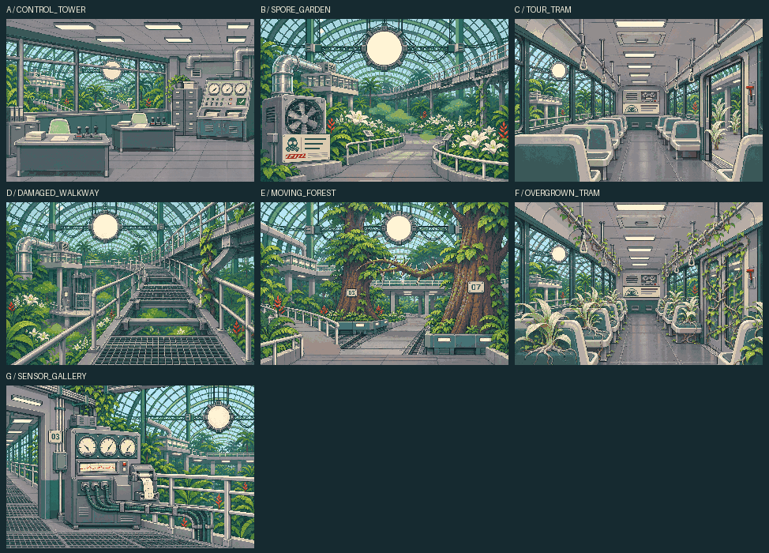
scenes:biology_park/control_towerOrderly initial tower office, three sign-off stamps per desk, analog approval equipment and the jungle outside.
scenes:biology_park/spore_gardenPale spore blooms, a stopped fan and glass extraction duct, risk pictogram and a damaged elevated perimeter route.

scenes:biology_park/tour_tramThe Junction tram interior at first boarding: intact empty seats, mechanical announcements, open side door and closed roof hatch.

scenes:biology_park/damaged_walkwayMissing catwalk grates, intact side stringers and railings, a vine-twisted support and lower maintenance landing above the spore clearing.
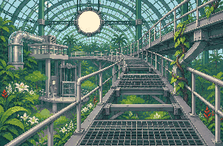
scenes:biology_park/moving_forestBiological trunks on partially concealed rail infrastructure, numbered bark markers, thorned branch and overhead observation route.

scenes:biology_park/overgrown_tramThe same tram geometry and camera after pale botanical passengers root through the seats and vines seal the ordinary doors.
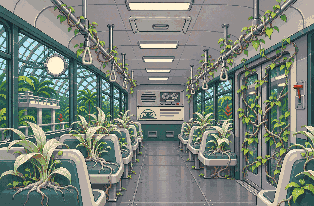
scenes:biology_park/sensor_galleryPhysiological needles, a mechanical trace and punched requests in an elevated service gallery. Cables descend toward the later central chamber.
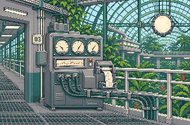
Selected references are exact copies of approved Batch1 PNGs. A/C/E use the selected signage-polish-v02 versions. The three-way Junction layout remains a screen-space convention rather than an invented compass map.
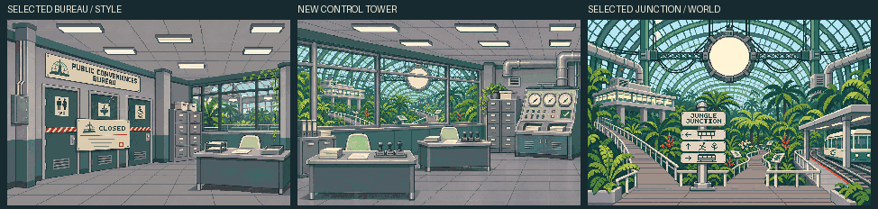
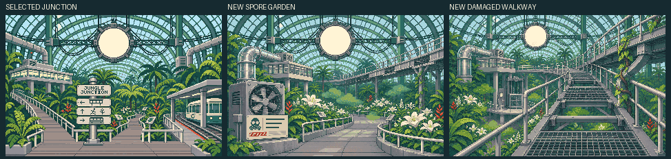
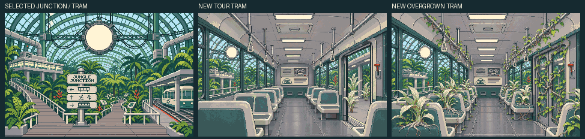
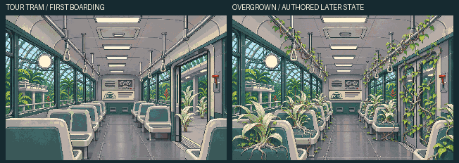
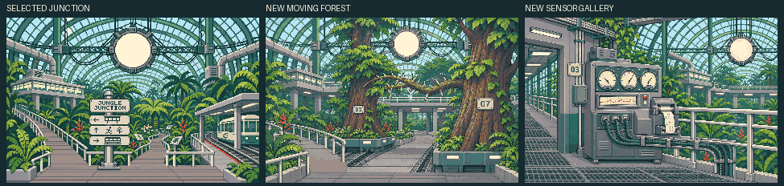
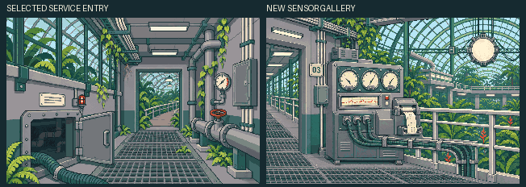

The garden's generated microlettering was replaced by deliberate administrative bars in a recorded sign-interior region. The respirator, closure stripe and architecture remain intact. Allowed mask · Changed mask · Preserved pre-polish export.
The first five renders were rejected by the owner for a chunky, graphic treatment that differed from selected Chapter2 art. Their original renders and exact submitted prompts remain preserved. Generation of F/G was paused until the revised tower style was accepted.
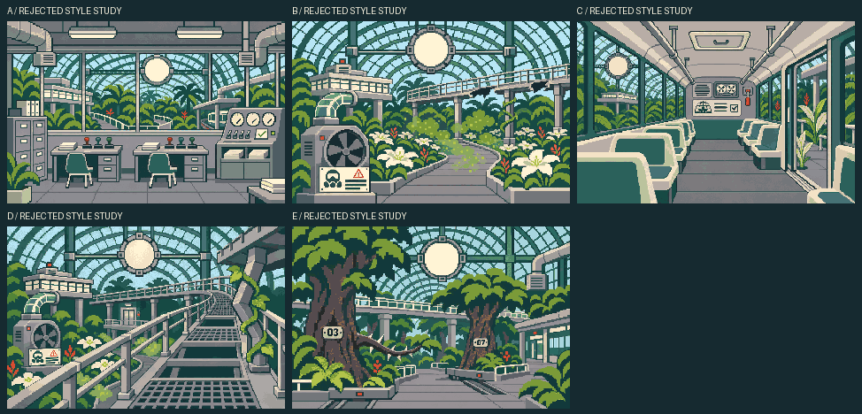
Corrected tower calibration beside the selected Bureau and Junction.